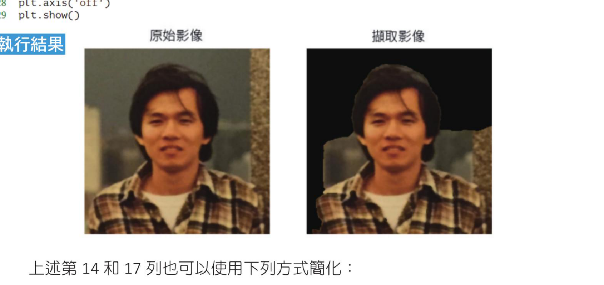
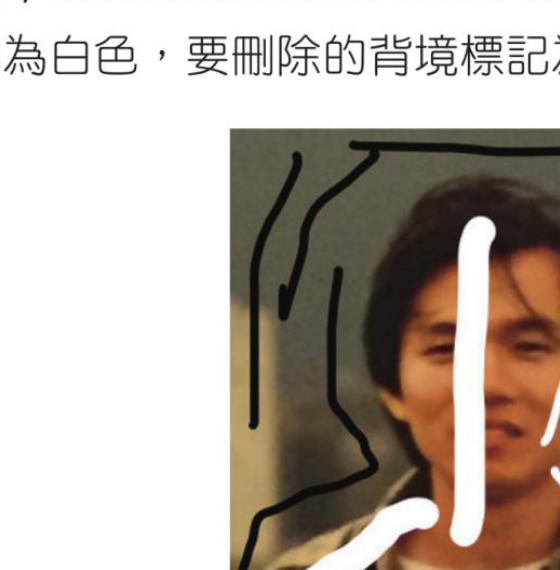
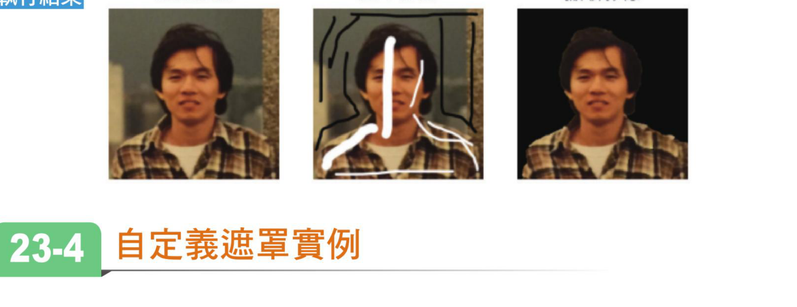
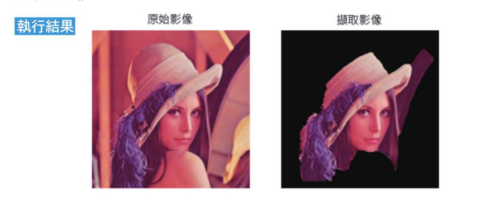
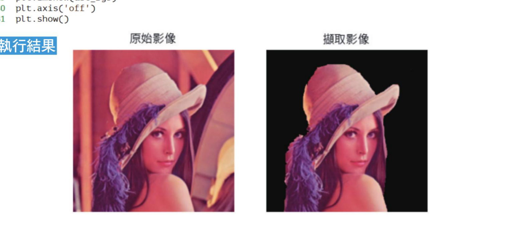

第 23 章
图像撷取
本章共 4 个小节 · GrabCut · cv2.grabCut() · ROI · 自定义遮罩
本章介绍使用 OpenCV 的 grabCut() 函数撷取图像前景。从图像撷取原理开始，接著说明函数语法、遮罩参数与 ROI 设定，最后以矩形初始化和自定义遮罩完成前景撷取。
23-1
认识图像撷取的原理
图像撷取技术最早是 2004 年由微软公司英国剑桥研究院的 C. Rother、V. Kolmogorov 和 A. Blake 等 3 个人发表，主题是 GrabCut: Interactive foreground extraction using iterated graph cuts，使用迭代切割技术交互式撷取图像前景。随后这项技术也被应用在 Microsoft 的软体内，例如：PowerPoint、小画家。
基本观念是，最初使用者在图像内绘制一块矩形，所要撷取的前景必须在此矩形内，然后对此进行迭代分割，最后将前景图像撷取出来。
下列是此 GrabCut 演算法的步骤：
- 在图像内定义一个包含要撷取图像的矩形。
- 矩形区以外当作是确定背景。
- 可以使用矩形区以外的资料区分矩形区以内的前景和背景资料。
- 使用高斯混合模型（Gaussian Mixture Model，GMM）对前景和背景建模。GMM 方法会对使用者输入的讯息建立像素点的分布，同时对未定义的像素点标记为可能前景或是背景。图形会根据像素分布建构，另外建立两个节点：Source node 和 Sink node。每个前景像素点会连接到 Source 节点，每个背景像素点会连接到 Sink 节点。
- 图像中每一个像素点连接到 Source 节点或是 Sink 节点。像素点也会与周围的 3 像素点彼此间有连接，两个像素点连接的权重由他们之间的相似度决定；如果像素颜色值越接近，权重值越大。
- 节点完成连接后，如果节点之间的边一个属于前景，另一个属于背景，则可依据权重对边做切割。最后所有连接到 Source 节点就是前景，所有连接到 Sink 节点的就是背景，这样就可以将像素点划分为前景与背景。
- 重复上述过程直到分类收敛，就可以完成图像撷取。
23-2
OpenCV 的 grabCut() 函数
OpenCV 提供了 grabCut() 函数可以撷取图像，语法如下：
mask, bgdModel, fgdModel = cv2.grabCut(img, mask, rect, bgdModel, fgdModel, iterCount, mode)
上述各参数意义如下：
img：3 个颜色通道、8 位元的输入图像，未来此图像含执行结果。mask：遮罩，遮罩元素可以是下表值。
| 具名参数 | 说明 |
|---|
GC_BGD | 定义明显的背景元素，也可以用 0 表示。 |
GC_FGD | 定义明显的前景元素，也可以用 1 表示。 |
GC_PR_BGD | 定义可能的背景元素，也可以用 2 表示。 |
GC_PR_FGD | 定义可能的前景元素，也可以用 3 表示。 |
rect：使用 ROI 定义前景矩形物件，资料格式是 (x, y, w, h)。这个参数只有当 mode 参数设为 GC_INIT_WITH_RECT 才有意义。bgdModel：内部计算用的阵列，只需设定 (1, 65) 大小的 np.float64 类型阵列。fgdModel：内部计算用的阵列，只需设定 (1, 65) 大小的 np.float64 类型阵列。iterCount：演算法的迭代次数，迭代次数越多所需执行时间越长。mode：可选参数，表示操作模式。设为 GC_INIT_WITH_RECT 时，表示使用矩形；设为 GC_INIT_WITH_MASK 时，表示使用所提供的遮罩当作初始化，然后 ROI 以外的区域会被自动初始化为 GC_BGD。GC_INIT_WITH_RECT 和 GC_INIT_WITH_MASK 可以共用。
上述函数的回传值内容如下：
mask：执行 grabCut() 函数后的遮罩。其实呼叫 grabCut() 函数时所使用的 mask 内容也会同步更新，这个回传的遮罩 mask 值也就是更新的 mask 值。bgdModel：建立背景的临时建模。fgdModel：建立前景的临时建模。
23-3
grabCut() 基础实作
程式实例 ch23_1.py：图像撷取，原始图像是 hung.jpg，请建立元素是 0 的遮罩 mask，使用 grabCut() 执行图像撷取。
这个实例设定 ROI 如下，不同的 ROI 设定会影响所撷取的内容，这将是读者的习题。
rect = (10, 30, 380, 360)
# ch23_1.py
import cv2
import numpy as np
import matplotlib.pyplot as plt
plt.rcParams["font.family"] = ["Microsoft JhengHei"]
src = cv2.imread('hung.jpg') # 读取图像
mask = np.zeros(src.shape[:2], np.uint8) # 建立遮罩，大小和src相同
bgdModel = np.zeros((1, 65), np.float64) # 建立内部用暂时计算阵列
fgdModel = np.zeros((1, 65), np.float64) # 建立内部用暂时计算阵列
rect = (10, 30, 380, 360) # 建立ROI区域
# 呼叫grabCut()进行分割，迭代 3 次，回传mask1
# 其实mask1 = mask，因为mask也会同步更新
mask1, bgd, fgd = cv2.grabCut(src, mask, rect, bgdModel, fgdModel, 3,
cv2.GC_INIT_WITH_RECT)
# 将 0, 2设为0 --- 1, 3设为1
mask2 = np.where((mask1 == 0) | (mask1 == 2), 0, 1).astype('uint8')
dst = src * mask2[:, :, np.newaxis] # 计算输出图像
src_rgb = cv2.cvtColor(src, cv2.COLOR_BGR2RGB) # 将BGR转RGB
dst_rgb = cv2.cvtColor(dst, cv2.COLOR_BGR2RGB) # 将BGR转RGB
plt.subplot(121)
plt.title("原始图像")
plt.imshow(src_rgb)
plt.axis('off')
plt.subplot(122)
plt.title("撷取图像")
plt.imshow(dst_rgb)
plt.axis('off')
plt.show()

左图是原始图像，右图是撷取图像；此例尚未获得完整撷取效果。
上述第 14 和 17 列也可以使用下列方式简化：
cv2.grabCut(src, mask, rect, bgdModel, fgdModel, 5, cv2.GC_INIT_WITH_RECT)
mask = np.where((mask == 0) | (mask == 2), 0, 1)
对读者可能会对于第 17 列的 np.where() 函数陌生，这个函数的语法如下：
np.where(condition, x, y)
如果 condition 是 True，则回传 x。如果 condition 是 False，则回传 y。程式第 8 列我们先建立全部元素内容是 0 的 mask，当我们使用 grabCut() 后，会产生元素内容是 0、1、2、3 的 mask，请回忆 23-2 节的解说：
- 用 0 表示明显的背景元素。
- 用 1 表示明显的前景元素。
- 用 2 表示可能的背景元素。
- 用 3 表示可能的前景元素。
所以我们使用 np.where() 对整个运算结果分类，这个指令如下：
mask2 = np.where((mask1 == 0) | (mask1 == 2), 0, 1)
上述相当于若是 0 或 2 的元素内容，结果是 0，也就是此像素点归为背景；1 或 3 的内容结果是 1，也就是此像素点归为前景。
程式第 18 列内容如下：
dst = src * mask2[:, :, np.newaxis]
这是因为 src 是彩色读取所以是三维阵列，mask2 是二维阵列，两者无法相乘；但是 mask2 内使用 np.newaxis 是可以提升 mask2 为三维阵列，这样就可以相乘了。
程式 ch23_1.py 我们并没有获得完整撷取的效果。为了改进，我们将图像进行标注；要保留的部分标记为白色，要删除的背景标记为黑色，可以参考下列 hung_mask.jpg。

遮罩图像：白色内容确定是前景，黑色内容确定是背景。
程式实例 ch23_2.py：另外呼叫 grabCut() 函数时，使用简化方式处理。
# ch23_2.py
import cv2
import numpy as np
import matplotlib.pyplot as plt
plt.rcParams["font.family"] = ["Microsoft JhengHei"]
src = cv2.imread('hung.jpg') # 读取图像
mask = np.zeros(src.shape[:2], np.uint8) # 建立遮罩，大小和src相同
bgdModel = np.zeros((1, 65), np.float64) # 建立内部用暂时计算阵列
fgdModel = np.zeros((1, 65), np.float64) # 建立内部用暂时计算阵列
rect = (10, 30, 380, 360) # 建立ROI区域
# 呼叫grabCut()进行分割
cv2.grabCut(src, mask, rect, bgdModel, fgdModel, 3, cv2.GC_INIT_WITH_RECT)
maskpict = cv2.imread('hung_mask.jpg') # 读取图像
newmask = cv2.imread('hung_mask.jpg', cv2.IMREAD_GRAYSCALE) # 灰阶读取
mask[newmask == 0] = 0 # 黑色内容则确定是背景
mask[newmask == 255] = 1 # 白色内容则确定是前景
cv2.grabCut(src, mask, None, bgdModel, fgdModel, 3, cv2.GC_INIT_WITH_MASK)
mask = np.where((mask == 0) | (mask == 2), 0, 1).astype('uint8')
dst = src * mask[:, :, np.newaxis] # 计算输出图像
src_rgb = cv2.cvtColor(src, cv2.COLOR_BGR2RGB) # 将BGR转RGB
maskpict_rgb = cv2.cvtColor(maskpict, cv2.COLOR_BGR2RGB)
dst_rgb = cv2.cvtColor(dst, cv2.COLOR_BGR2RGB) # 将BGR转RGB
plt.subplot(131)
plt.title("原始图像")
plt.imshow(src_rgb)
plt.axis('off')
plt.subplot(132)
plt.title("遮罩图像")
plt.imshow(maskpict_rgb)
plt.axis('off')
plt.subplot(133)
plt.title("撷取图像")
plt.imshow(dst_rgb)
plt.axis('off')
plt.show()

左图是原始图像，中图是遮罩图像，右图是撷取图像。
23-4
自定义遮罩实例
在说明这一节主题前，笔者将以 lena.jpg 图像为例建立图像撷取。
程式实例 ch23_3.py：重新设计 ch23_1.py，建立 lena.jpg 图像撷取。
# ch23_3.py
import cv2
import numpy as np
import matplotlib.pyplot as plt
plt.rcParams["font.family"] = ["Microsoft JhengHei"]
src = cv2.imread('lena.jpg') # 读取图像
mask = np.zeros(src.shape[:2], np.uint8) # 建立遮罩，大小和src相同
bgdModel = np.zeros((1, 65), np.float64) # 建立内部用暂时计算阵列
fgdModel = np.zeros((1, 65), np.float64) # 建立内部用暂时计算阵列
rect = (30, 30, 280, 280) # 建立ROI区域
# 呼叫grabCut()进行分割，迭代 3 次，回传mask1
# 其实mask1 = mask，因为mask也会同步更新
mask1, bgd, fgd = cv2.grabCut(src, mask, rect, bgdModel, fgdModel, 3,
cv2.GC_INIT_WITH_RECT)
# 将 0, 2设为0 --- 1, 3设为1
mask2 = np.where((mask1 == 0) | (mask1 == 2), 0, 1).astype('uint8')
dst = src * mask2[:, :, np.newaxis] # 计算输出图像
src_rgb = cv2.cvtColor(src, cv2.COLOR_BGR2RGB) # 将BGR转RGB
dst_rgb = cv2.cvtColor(dst, cv2.COLOR_BGR2RGB) # 将BGR转RGB
plt.subplot(121)
plt.title("原始图像")
plt.imshow(src_rgb)
plt.axis('off')
plt.subplot(122)
plt.title("撷取图像")
plt.imshow(dst_rgb)
plt.axis('off')
plt.show()

从上述可以得到所撷取的图像缺了身体、帽子上半部等。
grabCut() 函数也允许我们自定义遮罩，方式是先定义图像可能区域为 3，可以参考下列程式码：
mask[30:324, 30:300] = 3 # 定义可能前景区域
然后定义确定前景区域为 1，可以参考下列程式码：
mask[90:200, 90:200] = 1 # 定义确定前景区域
然后将上述区域代入 grabCut() 函数，在代入过程就可以省略 ROI 的设定，同时 mode 参数需改为 GC_INIT_WITH_MASK。
程式实例 ch23_4.py：使用自定义遮罩重新设计 ch23_3.py。
# ch23_4.py
import cv2
import numpy as np
import matplotlib.pyplot as plt
plt.rcParams["font.family"] = ["Microsoft JhengHei"]
src = cv2.imread('lena.jpg') # 读取图像
bgdModel = np.zeros((1, 65), np.float64) # 建立内部用暂时计算阵列
fgdModel = np.zeros((1, 65), np.float64) # 建立内部用暂时计算阵列
mask = np.zeros(src.shape[:2], np.uint8) # 建立遮罩，大小和src相同
mask[30:324, 30:300] = 3 # 定义可能前景区域
mask[90:200, 90:200] = 1 # 定义确定前景区域
# 呼叫grabCut()进行分割，迭代 3 次，回传mask1
# 其实mask1 = mask，因为mask也会同步更新
mask1, bgd, fgd = cv2.grabCut(src, mask, None, bgdModel, fgdModel, 3,
cv2.GC_INIT_WITH_MASK)
# 将 0, 2设为0 --- 1, 3设为1
mask2 = np.where((mask1 == 0) | (mask1 == 2), 0, 1).astype('uint8')
dst = src * mask2[:, :, np.newaxis] # 计算输出图像
src_rgb = cv2.cvtColor(src, cv2.COLOR_BGR2RGB) # 将BGR转RGB
dst_rgb = cv2.cvtColor(dst, cv2.COLOR_BGR2RGB) # 将BGR转RGB
plt.subplot(121)
plt.title("原始图像")
plt.imshow(src_rgb)
plt.axis('off')
plt.subplot(122)
plt.title("撷取图像")
plt.imshow(dst_rgb)
plt.axis('off')
plt.show()

自定义遮罩后，可以得到较完整的撷取图像。
1：请将 ch23_1.py 的 ROI 设定更改如下：
rect = (10, 30, 300, 300)
请列出执行结果。
2：重新设计 ch23_2.py，将所撷取的图案背景改为白色。